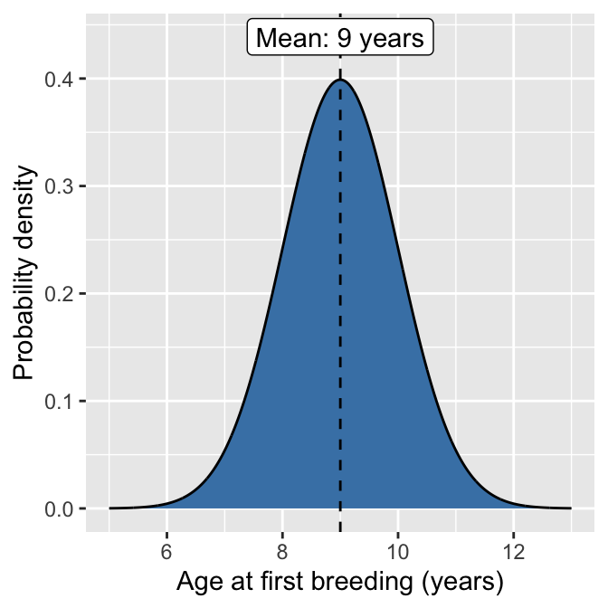
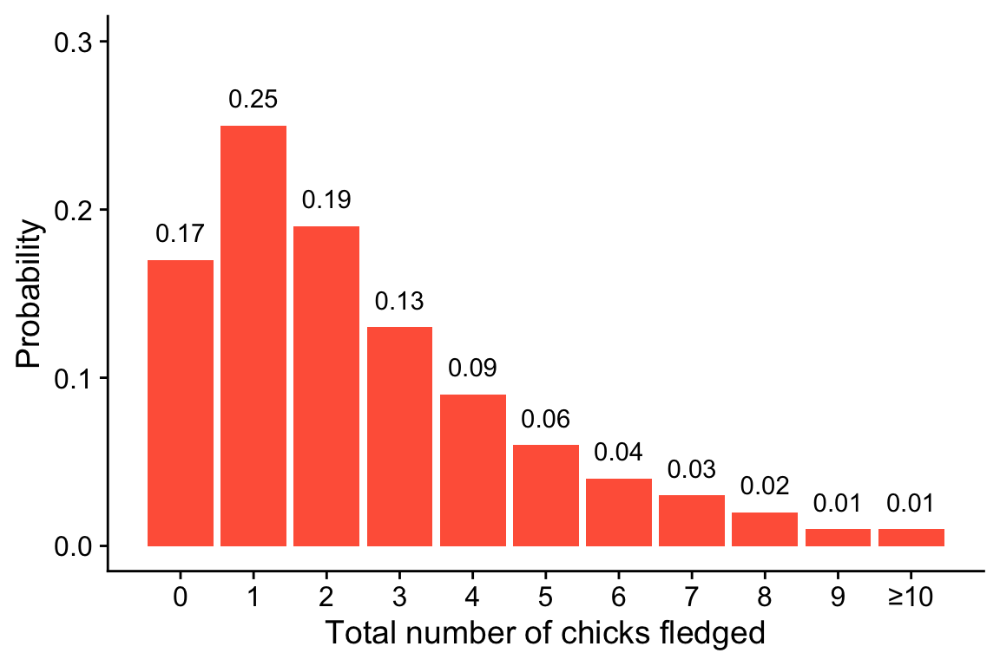
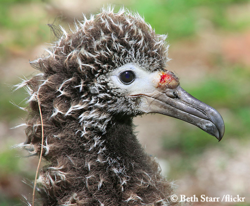

6 Probability
Due Friday, Feb 23, 2024 by end of day
Submit your answers via Google Classroom
Mōlī on O‘ahu

The mōlī, aka Laysan albatross (Phoebastria immutabilis), have a breading population on Oʻahu that is of considerable conservation importance and has been extensively studied (e.g. VanderWerf and Young 2016. Mōlī remain at sea for a year or more after fledging and then return to their birthplace to breed on land.
The figure below shows the probability distribution for the age at first breeding in the Oʻahu population. Note that this figure is hypothetical but is based on the actual VanderWerf and Young study.
Use the above figure to answer question 1
Visually estimate which of the following outcomes has the highest probability in a random sample of one individual in the population. [1 point]
- It breeds first exactly at age 9
- It breeds first between ages 9 and 10
- It breeds first between ages 8 and 10
- It breeds first between ages 10 and 13
Mōlī pairs lay one egg per year, and the egg may not hatch. If it does hatch, the chick may not survive to fledge. Thus the total lifetime reproductive success (number of fledglings) per female is variable, depending on hatching and fledging success, and also the survival of the female and age of first reproduction (see Question 1.). The below figure shows a hypothetical distribution of total lifetime fledging success per female (i.e. total number of chicks fledged over a lifetime). Hypothetical, but again based on real published research.

Use the above figure to answer question 2–3
- Suppose you find a female mōlī who has currently successfully fledged a chick. What is the probability that in her lifetime she will fledge a total of 7 or more chicks? Round your answer to the nearest thousandth [1 point]
Suppose that chick who just fledged is also a female. She will not return for several years to reproduce for the first time, if she even survives to reproductive age.
- What is the probability she will have 0 successful fledgings in her lifetime? [1 point]
- What is the probability she will have 7 or more successful fledgings in her lifetime? [1 point]
Survival of mōlī chicks is determined by a number of factors; an important is infection with infection with avian pox virus. Avian pox virus also influences whether fledglings will return to reproduce after their adolescent years at sea.

VanderWerf and Young (2016) studied the effect of avian pox virus on chick survival and recruitment back into the breeding colony (i.e. returning to Oʻahu to breed). They found that chick survival probability was 0.79 when not infected with avian pox virus, versus 0.68 probability when severely infected. Recruitment probability was measured by estimating the proportion of fledged birds that returned to the breeding colony by age 9. The recruitment probability, thus defined, for birds not infected was 0.58, versus 0.39 when severely infected.
Use the above information about survival and recruitment to answer questions 4–5.
Understanding the events of “survive” and “recruit”
Select one answer: are the events of “survive” and “recruit” mutually exclusive or not? [1 point]
- yes they are mutually exclusive
- no they are not mutually exclusive
The events “survive” and “recruit” and not indipendent (ask yourself: can a bird recruit into a breeding colony if it does not survive past being a chick?). Are the reported recruitment probabilities \(Pr(\text{recruit} \mid \text{survive})\) or \(Pr(\text{recruit})\)? [1 point]
- \(Pr(\text{recruit} \mid \text{survive})\)
- \(Pr(\text{recruit})\)
Calculate the following probabilities, round your answer to 2 decimal paces.
- What is the probability of a severely infected chick to grow up and recruit back to the colony? Assume once infected, this bird stays infected. [1 point]
- What is the probability of an uninfected chick to grow up and recruit back to the colony? Assume the chick will not become infected later in life. [1 point]
Young et al. (2009) studied the success of hatching and fledging of mōlī on Oʻahu. Their data for 2004 to 2009 is reproduced in the table below
Use the data table on hatching and fledging success to answer questions 6–7
You can copy the data by clicking the “Copy” button. After you click the copy button, go to Google Drive and create a new google sheet. Paste the data into the google sheet and then download it as a CSV. To do this, follow the directions in Lab 3 Section 3.2.2 Creating a data file. Work all the way through the steps including uploading your new data to Posit Cloud
- From the data, what is the estimated probability of successful hatching? Round your answer to 2 decimal points [1 point]
- From the data, what is the estimated probability of fledging given successful hatching? Round your answer to 2 decimal places [1 point]